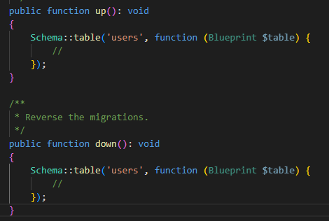

Migrazioak
Zer dira migrazioak? Migrazioak Laravel-ek datu-basearen bertsio-kontrola eramateko erabiltzen duen sistema dira. Horri esker, datu-basean egindako aldaketak dokumentatuta eta kontrolatuta geratzen dira, beste pertsonek ere exekutatu ahal izateko edo arazoren bat egonez gero, aurreko egoerara itzultzeko aukera izateko.
Migrazioak datu basean ditugun taulak kudeatzeko ere erabili ditzakegu, hau da, taula berriak sortzeko, taularen eremuren bat aldatu ahal izateko edota ezabatu ahal izateko.
Migrazioak database>migrations karpetan gordeko dira. Migrazio bakoitzak php baten egongo da, eta horretan ikusi dezakegunez Migration klase bat dago 2 metodo dituenak: up() eta down(). Migrazioa exekutatzerakoan up() metodoari deituko dio, eta reset edo refresh edo horrelakoetan, down() metodoari deituko zaio.
Migrazioekin lan egiteko, artisanek baditu hainbat metodo: make:migration, migrate:refresh, migrate:reset eta migrate:rollback
make:migration
Migrazio berri bat sortzeko erabiltzen da.
php artisan make:migration create_pupils_taula
php artisan migrate
Sortuta dauden migrazio guztiak exekutatzen ditu.
Laravel-ek bakarrik exekutatu gabe dauden migrazioak exekutatzen ditu beti, automatikoki. Ez du berriro exekutatuko jada exekutatu direnak (migrations taulan apuntatuta daudelako).
php artisan migrate
migrate:rollback
Azken batch edo "lote"-an exekutatu diren migrazioak desegiten ditu.
Hau da, azken exekuzioan egin ziren migrazio guztiak atzera botatzen ditu (down() exekutatuz).
Batch-a migrations taulako batch eremuan ikus daiteke.
php artisan migrate:rollback
migrate:reset
Migrazio denak desegiten ditu (down() deituz), ez bakarrik azken lotea.
php artisan migrate:reset
migrate:refresh
Lehenik reset egingo du (down() metodo guztiak), eta ondoren berriro exekutatuko ditu migrazio guztiak (up() metodo guztiak). Hau oso erabilgarria da garapenean datu-basea "garbi" izateko.
php artisan migrate:refresh
migrate:fresh
Taula guztiak ezabatzen ditu FIZIKOKI, eta gero up() metodo guztiak exekutatzen ditu.
Ez du down() metodoa erabiltzen, eta horregatik arriskutsuagoa da.
Taula berri bat sortu migrazio bat erabiliz
Taula berri bat sortzeko, migrazio berri bat sortuko genuke, hurrengo instrukzioa erabiliz:
php artisan make:migration create_posts_table
Behin fitxategia sortuta dugunean, klase berri bat sortu digutela ikusi dezakegu, horren ostean up() eta down() metodoak aldatuko ditugu:
public function up(): void
{
Schema::create('posts', function (Blueprint $table) {
$table->id();
$table->string('title');
$table->text('content');
$table->timestamps();
});
}
/**
* Reverse the migrations.
*/
public function down(): void
{
Schema::dropIfExists('posts');
}
Zelan egin taula baten eremu aldaketa taulak datuak izanda?
Taula baten eremuak aldatzeko, migrazioa sortuko genuke ere. Hau horrela egingo genuke datu basean datuak izanez gero, ez izatekotan zuzenean create migrazioa aldatuko genuke eta refresh batekin exekutatu guztiak.
Adibidez, taula baten eremu berri bat sartzeko, migrazio berri bat sortu beharko genuke. Lehen esan dugun moduan, migrazioaren izena edozein izan daiteke, baina "konbentzioz" horrela idatziko genuke:
php artisan make:migration add_avatar_to_users_table

Sortuko zaigu migrazio dokumentu bat aurreko metodoekin, beraz hemen eremua gehituko dugu create kasuan moduan. Taulan datuak egongo direnez, eremua sortzerakoan jarri behar dugu null izan daitekeela, akatsarik ez emateko. Hau up() metodoan idatziko dugu.
$table->string('avatar')->nullable();
down() metodoan ere zutabea ezabatu beharko dugu-
$table->dropColumn('avatar');
Migrazio hau exekutatzerakoan, avatar zutabea gehitu du, baina taularen bukaeran. Horrela nahi ez izatekotan, rollback egingo dugu eta gero aldaketa migrazioan
php artisan migrate
Demagun email eremuaren ostean jarri nahi dugula:
$table->string('avatar')->nullable()->after('email');
Dokumentazio ofiziala hurrengo esteka honetan duzue: https://laravel.com/docs/12.x/migrations
Hurrengoa: Eloquent